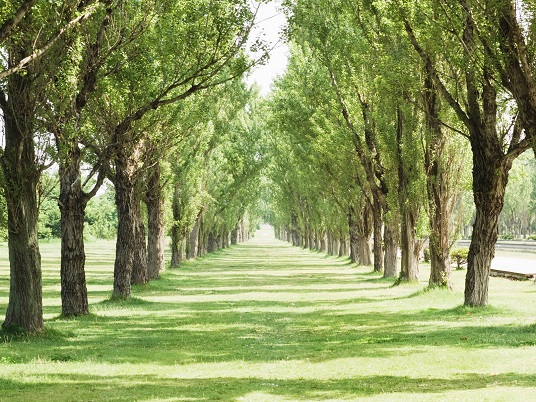
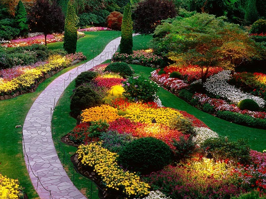
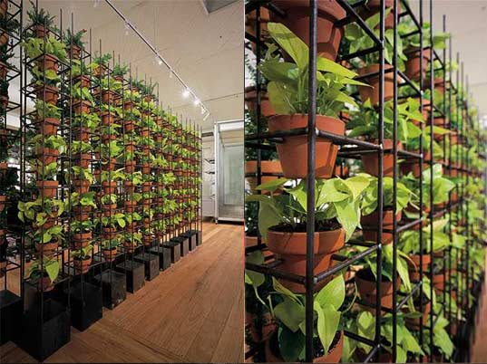
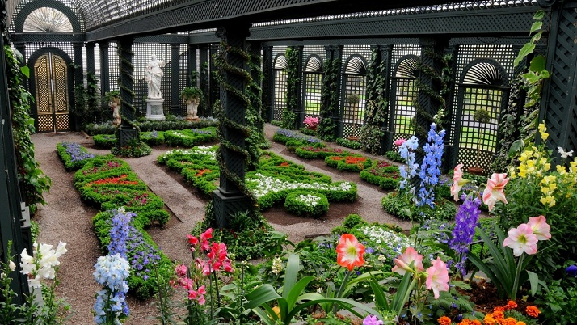

Huge exterior gardes for your enjoynment, private and public designs specialized in high transit gardens and native species.

Flower catalogue including chromatic palletes, polinization timelines design, biological plague control and support contracts to have a whole year colorfull garden.

Architectonic design that includes greenwalls for interior design and facades for exteriors. We work with the main architect studios of London.

Our design includes moderns and traditional gardens, we have experts in tradictional english gardens and youngh designers that can do whaever you want and beyond.